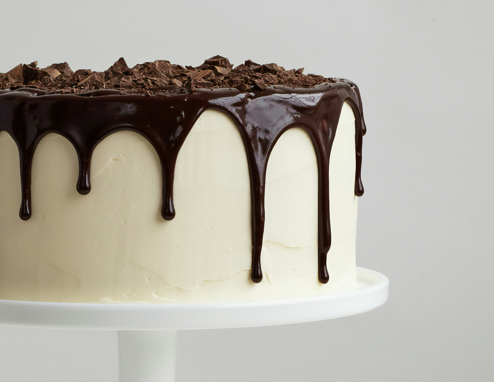
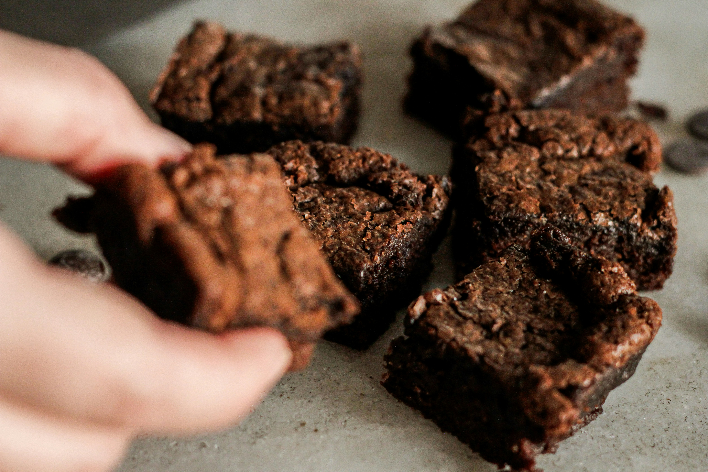

Fresh Out The Oven

Secret to Perfect, Crack-Free Homemade Cake Pops
Published: October 15, 2026 | Author: Drippy Dreams Kitchen
Ever wonder how professional bakeries make smooth, perfectly spherical cake pops without those annoying cracks forming in the candy coating? The answer comes down to controlling the temperature shift between your chilled cake balls and the melted chocolate coating. In this guide, we reveal the absolute best binders to use and how to get that signature dip every time...
Get Recipe Breakdown

5 Secrets to Fudgier Homemade Brownies
Published: October 12, 2026 | Author: Drippy Dreams Kitchen
Are your brownies coming out cakey instead of dense and gooey? The secret isn't just about adding more sugar—it comes down to the temperature of your melted butter and how you whip your eggs. Today, we test five popular techniques to find the ultimate method for chocolate lovers...
Get Recipe Breakdown